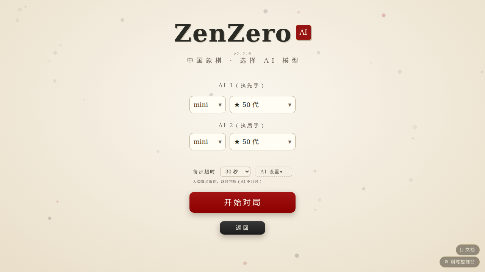
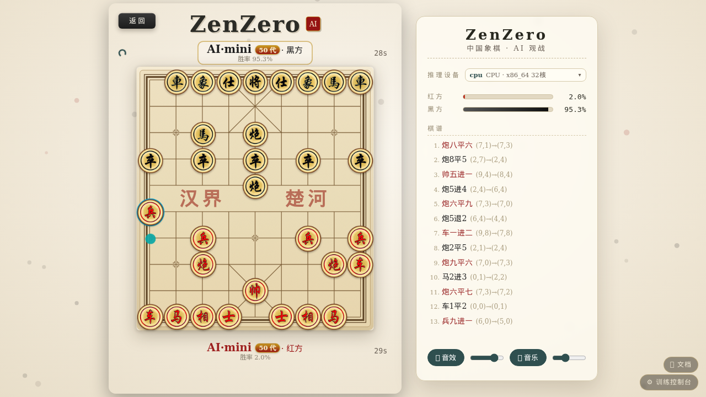
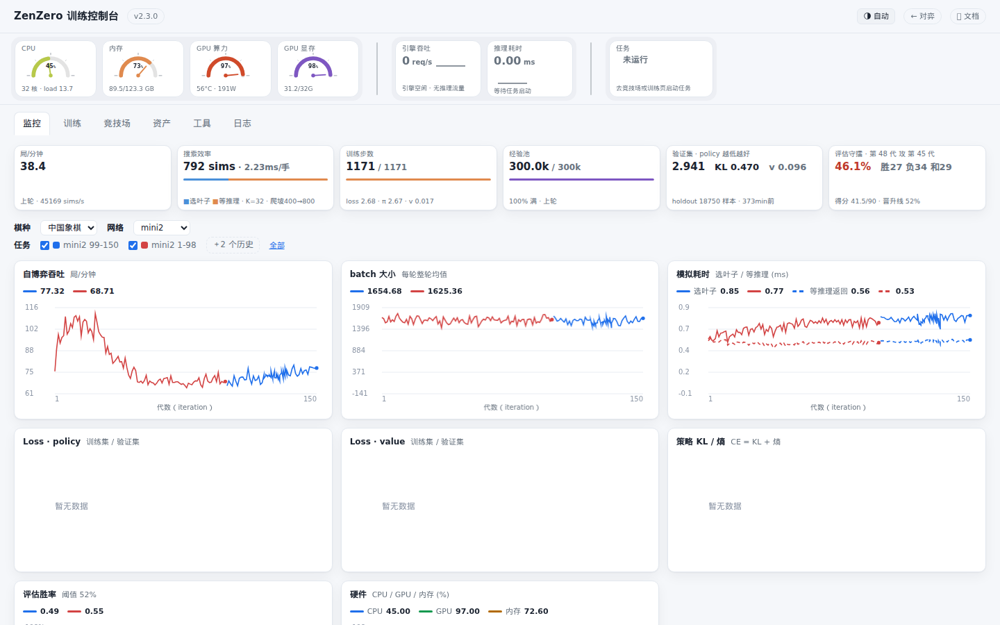

ZenZero 只有一个进程要养：python main.py（对弈 + 控制台 + 文档，默认 127.0.0.1:5000）。启动后，浏览器即可访问对弈页、管理台与本文档；
打开 /admin 控制台即可启停训练、查看曲线与管理模型。训练是同机另一条命令（或由控制台代为拉起）。
下面的"三步上手"覆盖 90% 的使用场景。
0 三步上手
python main.py（默认绑定本机回环 127.0.0.1:5000；局域网开放加 --host 0.0.0.0，
换端口加 --port 8080）。浏览器访问 http://<主机>:5000/ 即可开始对局。http://<主机IP>:5000/admin → 训练页 → 核对棋种/网络/参数 →
点击「启动训练」；训练结束时点「收尾后停」。全程无需终端操作。1 安装
单一环境，用 uv 管理（依赖清单只有 requirements-backend.txt 一份，前端零依赖）：
uv venv -p cpython-3.14t .venv # free-threading 解释器（无它则用 -p 3.14，仅吞吐受损）
source .venv/bin/activate
uv pip install -r requirements-backend.txt --extra-index-url https://download.pytorch.org/whl/cu132 # NVIDIA Linux
# 其它设备把 extra-index 换成 rocm6.4 / xpu，或直接 pip 默认（MPS/CPU）——torch 不锁版本，按卡自选- Cython 加速（可选，强烈建议）：
python scripts/build_cython.py；只验证现状用--check。 缺.so时自动回退纯 Python（正确性不变，速度下降）。不要直接跑setup.py build_ext --inplace—— 训练在跑时原位覆盖会被内核挡下（ETXTBSY）甚至半新半旧，构建脚本已封成"暂存编译 + 原子替换"。 - 模型权重：不训练也想下强棋，去 Releases 下载
.pt放进data/ChineseChess/（m 网络）即可； 系统自动取编号最大者为最强。想换网络（s/l/m8/mini…）建data/ChineseChess/s/放权重。
2 对战
服务起后（第 0 步②），对弈页三步开局：选棋种 → 选模式 → 选模型。模式含人机（可执红执黑）· 双人同屏 · AI 观战； 模型为两级级联——先网络（s/m/l/m8/mini/自定义），再该网络下的模型代数。开局前还有一行可调配每步超时（30–300s，默认 100s，人类超时判负、AI 不计时）； 含 AI 的模式另有「AI 设置」浮层，为每个 AI 玩家独立配置模拟次数（MCTS 搜索深度）与采样温度（着法随机性，0 = 总走最强）。


手机/平板同网段直接访问，窄屏自动底部抽屉。双人同屏纯本地运行，不开 AI 服务也能玩。
| 要点 | 行为 |
|---|---|
| 未放置任何模型 | 可双人玩；人机/观战会提示模型列表为空（错误框给出放置路径） |
| GPU 被别的程序占满 | 开局自动降 CPU（侧栏设备信息条显示 cpu，人机自动限每手 60 sims 保可玩）；释放 GPU 后可在设置中一键切回（在线搬迁引擎，不打断对局） |
| 服务被重启 | 正在下的人机局会话过期，重开一局即可；前端对失效会话自动重建并重放局面（多数情况无感续战） |
| 命令行对战 / Gomocup 协议 | 第 5 节 |
3 训练
3.1 推荐路径：管理台
http://<主机IP>:5000/admin → 「训练」页 → 启动训练表单字段就是训练旋钮：棋种、网络（s/m/l/m8/mini/自定义）、并发线程、每轮局数、虚拟损失 K（自适用，留空即可）、（可选）批上限与设备。 启动参数里的训练目标三项可留空（留空=config 缺省）：练到第几代自动收尾、每手模拟次数从几爬到了、守擂胜率门槛。启动后"监控"页看实时；停止三档：收尾后停（推荐，自博弈+fit+守擂全做完）· 优雅停止（在跑的局收完入仓即退）· 立即结束（kill -9，丢当轮未落盘数据）。
3.2 裸命令（服务外的独立终端）
python -X gil=0 -m scripts.train_server # 用仓库 config 缺省
# 全参数环境变量版：
ZZ_GAME=ChineseChess ZZ_PROFILE=s ZZ_WORKERS=32 ZZ_GAMES_PER_ROUND=400 \
ZZ_BATCH_LEAVES=64 ZZ_DEVICE=auto python -X gil=0 -m scripts.train_server-X gil=0必须保留（首次 forward 会惰性 import triton 试图重开 GIL，不加则多线程 MCTS 假并行）。- 续训自动从"最新 checkpoint + 仓"接上：同一神经网络目录里有 ckpt 即热启动；冷启动首个模型自动晋升（无守擂者）。
- 表示版本换代的处理是自动的：feature_version 与 best 模型不匹配时从新网络开训、旧 best 留任守擂（§1 篇 §6）。
- 何时该停：§4 篇第 7 节四条判据（KL 连续 10 代不降 / value 平台 / 晋升胜率均值 <54% / 跨代对局 <60%）。
4 监控台速览（/admin）
平台定位：控制台以桌面浏览器为主要形态（滚轮缩放 / 拖动平移 / 双击复位）；手机全面适配（11-06）——顶栏收成 mini 状态条（三列两行表+一键展开）、页签横向滚动、表格横滚、图表卡两列自适应；图上单指平移、双指捏合缩放、双击复位。对弈页手机平板一贯支持。

| 页 | 能做什么 |
|---|---|
| 工具 | scripts/ 其余功能的 Web 启停：piskvork（Gomocup 协议服，网络/模型级联下拉选择）/ bench（引擎批扫描）/ build_cython（安全构建）——参数白名单校验、日志在线看、服务重启自动收养 |
| 监控 | 六张概览卡（局/分与引擎吞吐、搜索效率·选叶/等推理拆分、训练步数、经验池、验证集、评估守擂）+ 八幅曲线（Loss·policy/value、策略 KL+熵、胜率、吞吐、硬件）；滚轮缩放、双击复位、每卡悬停释义；≥1024 宽一行六卡，手机两列 |
| 竞技场 | 对局平台：多场次各自独立榜（新建/删除）、名册悬浮穿梭窗管理参赛选手、智能约架/车轮战/自定义对决三模式、自适应并行桌；实时对阵直播+排名/实力阶梯/对阵胜率矩阵 |
| 训练 | 启停 + 三档停止；表单即环境变量（见 §5 篇 5 节对照表） |
| 资产 | checkpoint / 经验池（含克隆）/ 运行目录；三表皆可勾选批量删除（逐项护栏，best 拒删）；日志不在资产管理之列——查看去日志页，轮转由系统自管；设为最强（回滚守擂者）；按护栏删除（拒删 best、删仓需二次确认） |
| 日志 | 训练进程实时尾部（含停止按钮联动）置顶；任选日志文件尾读：模块日志、轮转历史、console 原始输出 |
接口契约（供脚本/集成调用）在 §5 篇第 7 节；写操作若设了 ZZ_ADMIN_TOKEN 需带请求头 X-ZZ-Token。
5 其它玩法
| 命令 | 场景 |
|---|---|
python -m scripts.cli_play | 终端下棋：进程内自带引擎，不依赖服务 |
python -m scripts.piskvork_server --host 0.0.0.0 --port 12345 | Gomocup 协议对外（Piskvork GUI 可连） |
| 以上 piskvork / bench / build_cython 已接入控制台「工具」页（竞技场对局入口在「竞技场」页）：在线启停、参数白名单校验、日志查看（接口契约见 §5 篇 7 节）。 | |
python -m scripts.arena | ELO 天梯：向 data/<Game>/rates/candidates.txt 写候选（如 10,20,34）批量互刷等级分 |
python -m tests.drills.model_match --a s:48 --b m:498 --games 40 --sims 800 | 任意两个"网络:代数"真金对打，得分率 ±2σ 判强弱（务必 GPU：CPU 测量无效，§4 篇 10.2） |
python scripts/bench_batch_sweep.py | 引擎批扫描，看成本模型还准不准 |
6 选网络与配置速查
- 起点与经验池：训练表单可选起点（续训 / 从头训练：随机新网络但代数接续永不覆盖 / 从指定代数分叉）与经验池。经验池是棋种级资源（
data/<Game>/buffers/<name>/，主池+留出集成对），不按网络分家——下拉列出已有池、悬停看详情（表示版本、容量/已用、最新数据来自哪个网络的第几代）、末项新建。任何网络都可以接着已有池训练（跨表示版本被启动闸门拒绝，§5 篇 4.3）。想拿老池做实验又怕覆写坏它：资产页「经验池」面板点「⧉ 克隆」——整体复制成新编号池，回训练表单选副本即可，原池不动（训练进行中不可克隆）。**经验池必选**——控制台不提供"不选"；新建无需起名，默认按棋种递增编号（pool1、pool2…），建好后可改名使用。模型目录里的原位池仅作历史兼容（裸命令训练未指定时使用）。 - 自定义网络：控制台「训练 → 网络配置」给规模组合起名字（如
mini64），保存后训练表单、对弈页、资产页的网络下拉即刻可选；删除只移除名字、磁盘上的模型（权重）原样保留（重加同名网络即接上）。 - 网络怎么选：s（8M）练得快、一夜可追平老 m 网络（§4 篇 10.3）；m（25M）默认、老资产在这； l（30M）天花板实验；m8/mini/mini2 为自定义命名配置（profiles.json）。仓跨网络通用（同表示版本），大网络热身可拷小网络的仓。
- 全部运行期旋钮 = 环境变量（全表见 §5 篇）（
ZZ_GAME / ZZ_PROFILE / ZZ_DEVICE / ZZ_WORKERS / ZZ_GAMES_PER_ROUND / ZZ_BATCH_LEAVES / ZZ_MAX_BATCH / ZZ_INFER_WORKERS / ZZ_ADMIN_TOKEN）， 语义与默认值见 §5 篇表 4；不改仓库 config 文件。 - 版本从哪看：对弈页「设置」底部与控制台标题徽章（形如
v2.3.0 · 9f2c1ab）， 或python main.py --version；四轴版本（应用/表示/网络/模型代数）的分工见 §5 篇 4.4。 - 静态默认值在
core/utils/config.py（c_puct、温度调度、dirichlet、阈值、sims 爬坡、presets 规模）。
7 排障速查
| 症状 | 先看这 |
|---|---|
| 起服务报端口占用 | --port 换一个；或找到旧进程（训练进程由控制台管理，不会撞 web 端口） |
| 界面提示"无法获取模型列表" | 服务没起 / 该神经网络目录没有 .pt；下拉换网络或代数再试 |
| 训练启动即停 | 日志页「● 实时」跟随（文件即 logs/train/console.log，历次会话追加）。最常见：仓不足以喂一个 batch（将自动先行填充缓冲区，等待其完成即可）；或显式设备不可用（设计如此，改 ZZ_DEVICE=auto） |
| 面板数字是"缓存" | 看卡片副标题：标"实时"走心跳，标"上轮/已停"是 perf 记录或日志启发式；训练进程不在时全部转灰属正常 |
| 怀疑哪里炸了 | logs/crash/latest.log（线程级异常全进这里，带堆栈）；面板顶部红色横幅同址提示 |
| GPU 训练吞吐骤降 | 监控页看 GPU 利用率与"凑批等待"：若与占用 GPU 的进程并发，应错峰运行；若 window 顶格而均批不涨，调大 ZZ_MAX_BATCH（§3 篇 5 节） |
8 测试与验收
# 全量回归（tests/ 目录，13 套件、无外部框架，CPU 即可，约 20 分钟）：
for t in tests/test_*.py; do echo "== $t"; ZZ_DEVICE=cpu .venv/bin/python "$t" || break; done
# 单项：如规则 21 项 —— .venv/bin/python tests/test_chess_rules.pytests/ 随仓库分发：drills/ 为度量工具（model_match 跨代对打等），test_*.py 为无框架自跑回归。
文档各篇的附录各自列出"哪条测试覆盖哪个结论"；改 core/env、deepMcts、
凑批窗口/退役顺序之前，至少跑对应篇附录点名的套件。改完记得 python scripts/build_cython.py --check。